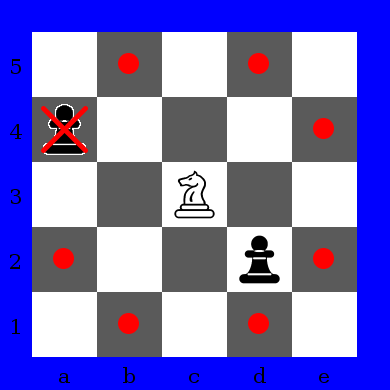

Knights against pawns is played in 5x5 chessboard, one player has two knights and another has five pawns. In options at Select Game dialog window you can define which player has knights. If white player plays with knights, white knights starts at "b1" and "d1" squares and black pawns starts at 5th rank. Otherwise, white pawns starts at 1st rank and black knights starts at "b5" and "d5" squares.
Knights against Pawns start position. Knights as white.
Knights against Pawns start position. Knights as black.
Knight has special movement that describes 'L' character and is only piece that can jump another pieces. Knight captures a piece if this piece stays in last square of knight movement.

Knight movement.
Pawn can move only one square in front. If another piece is in front of pawn, this pawn can't move. Pawn captures opponent piece at diagonal.
Pawn movement. Pawn at "a3" can't move, since knight
at "a4" blocks pawn movement. Pawn at "b2" can move to "b3" or
capture knight at "c3".
Player with knights must capture all opponent pawns or block all pawn movements to win. Player with pawns must carry at least one pawn to last rank (5th rank if white pawns or 1st rank if black pawns) and this pawn can't be captured in next opponent move. Player with pawns also win if all opponent knights are captured.